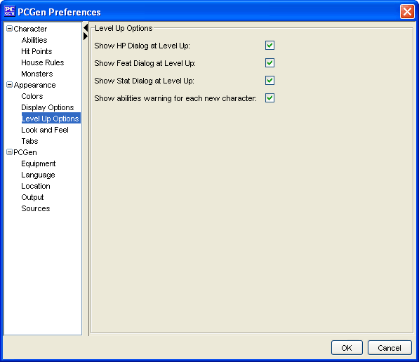

Appearance Level Up Options

The
Level Up Options
menu option will allow you
to set options for:
-
Show HP Dialog at Level Up
. Shows the HP
dialog box when you level up.
-
Show Stat Dialog at Level Up
. Shows the Stat
dialog box as appropriate when you level up.
-
Show abilities warning for each new character
.
Shows a reminder to set your abilities before leveling up.
-
Enforce spending of skill points and feats before
leveling up
. Prevents leveling up untill skill points are
spent and feats are chosen.